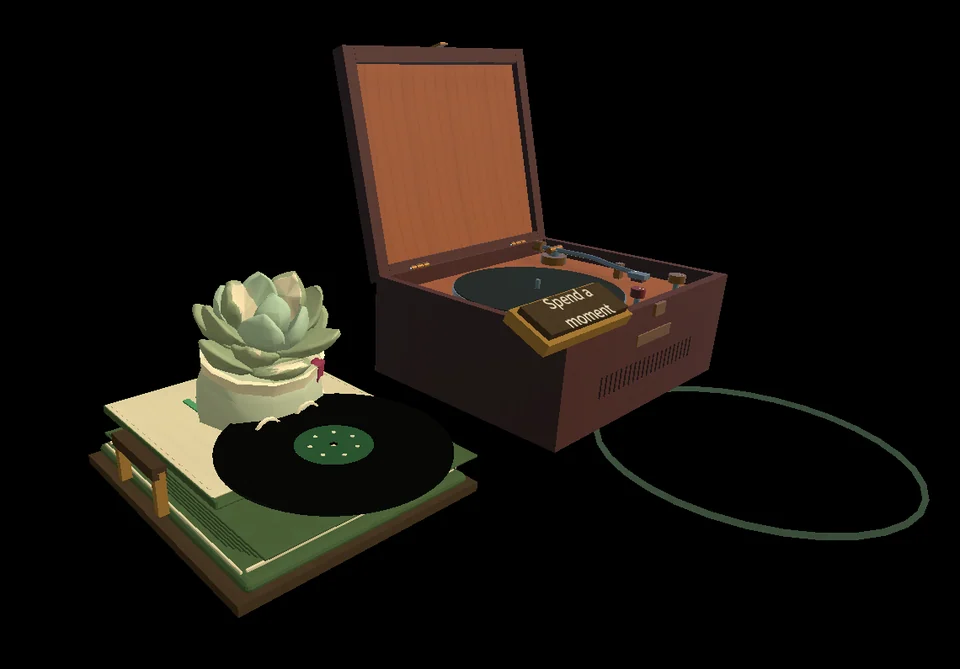
Wooden Record Player
Choose a track and a resident brings you its disc. Place it on the platter to listen together. Return that same disc before changing the music.
Inspect the wooden record player in 3D
Mixed reality game · Meta Quest 3
Five tiny residents. One second-hand suitcase.
The residents leave their old woodshop with their furniture in pieces. As their Room Host, you help restore each belonging and find a place for it in your own home.
Game and interaction design, character direction, and technical art.

Game design
The residents took their furniture apart when they left the old woodshop. Their bench, shelf and table travel with them in a second-hand case. Opening it gives you two roles in the same room. You help them make things at the workbench and make space for them as their Room Host.


At the workbench a good fit has a physical answer. In a conversation the resident gets a say. Put a tool down to listen, respond or negotiate, then pick it up and return to the same operation.
Completing the six core projects leads to an invitation to stay. Four further projects give the household more places to spend time together.
Research
How can a player tell where a piece of wood belongs? I studied 34 Chinese joinery families and variants, to see what carries the load, which shapes fit together and what has to go in first. Those clues became part of the game.


One influenced what happens around a finished table. The other influenced what the player feels while making it.
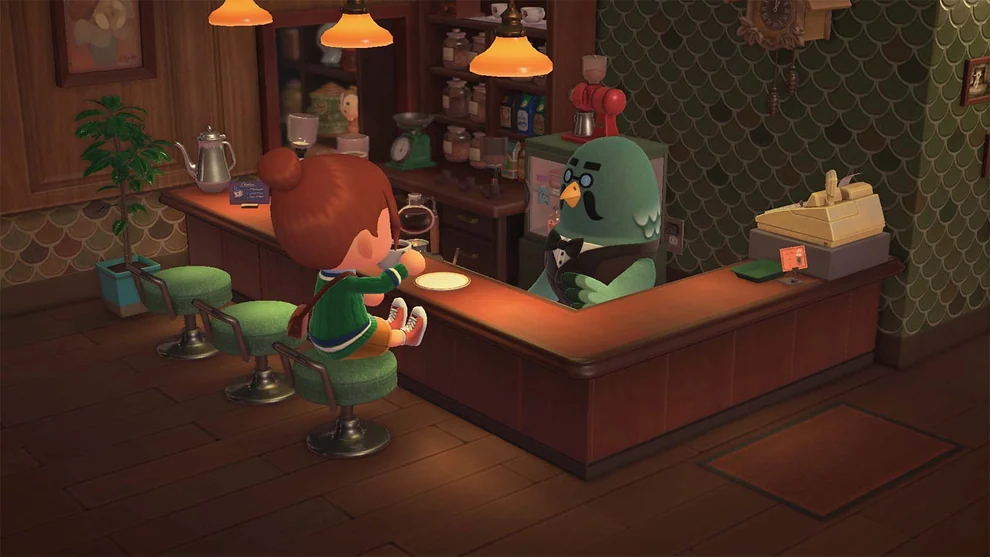

My October survey grouped joints, locking pieces and assemblies by the construction problem they solve. A through-tenon shows where it enters. A pin adds a second action that locks it in place. Closing a frame too soon can block the next piece entirely.
Open a group to explore the survey entries, including the architectural and puzzle structures I considered as extensions.
Read the original research notes (中文)
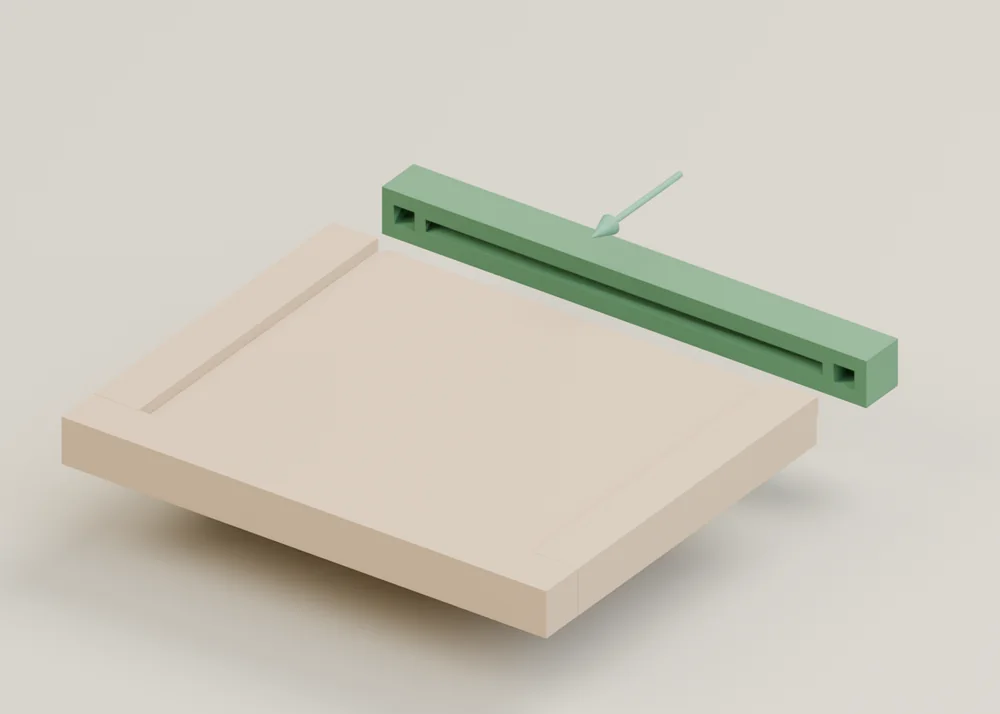
Three original Blender studies put those observations into practice. I built 30 separate wooden parts and checked 21 sampled insertion paths against the surrounding geometry.
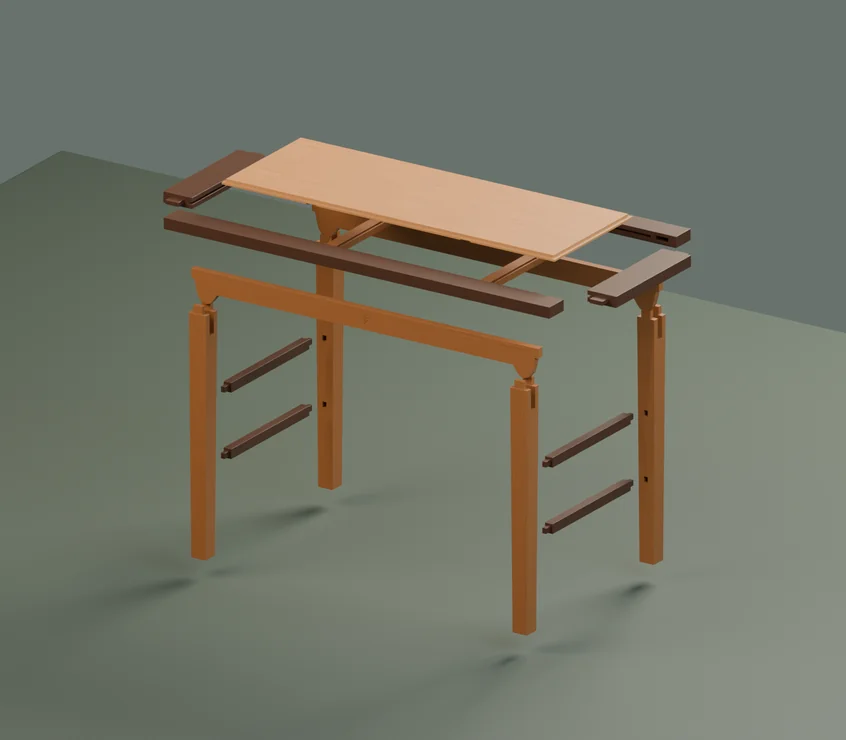


Workshop design
The suitcase opens into two connected places. Five residents live on the case. Across a short bridge, the player works at a turntable with tools on the left and pigments on the right.
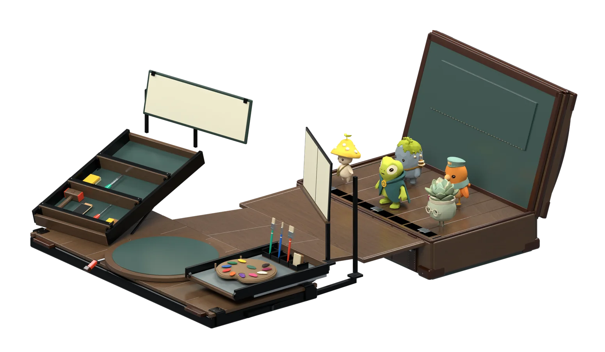
The current instruction and its progress sit beside the workpiece.
Tools are grouped by use. Each handle faces the player so it can be picked up directly.
Click the red lever to unlock the turntable. Turn it with the left stick, then lock it before cutting.
The five residents gather on the open case. A sliding bridge joins their home to the worktop.
The drawing keeps the parts, joint order and carving motif in sight while both hands are busy.
Brushes stand beside the pigments and mixing well on the right, clear of the repair tools.
Crafting
Each recipe selects the work its furniture needs. A peg repair calls for a drill and a saw. A carved surface calls for a gouge, a brush and a lighter touch.
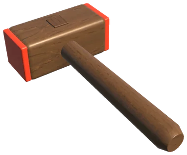
AssemblyRead the drawing, find the matching part and release it at its seat. Secure the joint with a tap or a turn.
 Repair
RepairClamp and mark the damage. Drill, peg and trim a hole, or cut a shallow groove and glue in a strip of old wood.
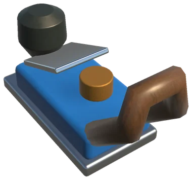
SurfacePlane the repair flush, sand the surrounding wood and sweep away the dust.
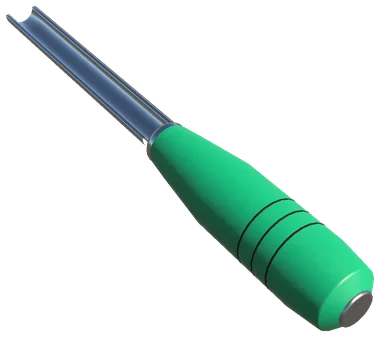
ReliefTransfer the pattern, cut its outline and carve the recess. Sand the edges before brushing it clean.
 Colour and finish
Colour and finishMix the pigments, test a stroke on an offcut and paint the carving. The Reading Table gets a final coat of wax.
The player chooses the parts and their order. The final alignment assist reduces the small wrist adjustments needed to seat a joint.


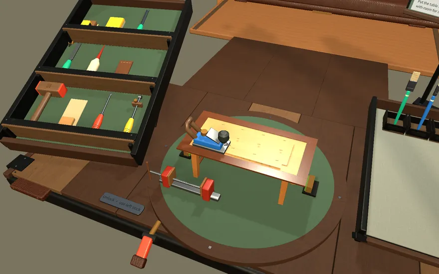

Turn the tools, fixtures and materials to inspect their working ends. Each object links to the operation that uses it.

Read the drawing to find the part and the supporting pieces that must already be in place. Move it towards its empty seat. Within the capture radius and 22 degrees of the target angle, releasing the grip commits the fit.
Lift the mallet and tap each highlighted joint. Watch the gap close as the contacts seat the wood.
Joinery malletFor a screwed connection, seat the driver, hold the trigger and turn clockwise. Finish each fastening site before fitting the next part.
Slotted screwdriverLock the turntable. Turn the padded clamp’s handle clockwise with the screwdriver to steady the workpiece for repair.
Padded clamp, Slotted screwdriverTrace the highlighted strip with the gauge. The mark gives the next operation a destination.
Marking gaugeSet the bit on a mark and turn the side crank. Crank travel deepens the hole. A support can hold the drill while the same hand operates it.
Hand-cranked drillPress a wooden peg into each drilled hole until it settles into its matching position.
Wooden pegLift the mallet and give each peg three accepted taps to seat it in the wood.
Joinery malletMove the saw back and forth across the projecting peg until it is level with the surrounding surface.
Flush-cut sawSteady the chisel at the neck and push shallow passes through both groove regions.
Flat chiselHold the trigger and draw the nozzle along the groove, covering all three repair regions with a thin layer.
Wood gluePress the old-wood strip into the groove, then tighten the clamp to hold it through the short setting time.
Old-wood inlay, Padded clampKeep the plane’s sole near the wood and push over the repaired strip until it meets the surrounding surface.
Hand planeRub across the front, middle and rear. The distance travelled in contact with each region counts towards its finish.
Sanding blockSweep all three prepared areas with the dust brush before transferring the pattern.
Dust brushAlign the sheet on the highlighted wood and press briefly. The transferred motif defines the boundaries for carving.
Transfer sheetPush the gouge along the transferred boundaries. Following each edge leaves a visible shallow cut.
Carving gougeUse shallow passes inside each outline. Covered regions become recessed geometry in the surface.
Carving gougeSand the carved area to soften its new edges while keeping the shallow relief.
Sanding blockSweep the carved regions clean. Their outlines and interiors also define where the paint will go.
Dust brushAt the painting station, match the numbered pigments to the drawing. Designs that call for a mixture use the well in the middle of the palette.
Paint palette, Painting matTry a stroke on the offcut. Use a flat brush for broad coverage, a detail brush for tight edges or a dry brush for texture. Adjust the stroke width before moving to the piece.
Practice offcut, Flat brush, Detail brush, Dry brushFollow the motif with the selected colour. A whole stroke can be undone. The marks stay in local surface coordinates as the piece rotates and when it is placed or saved.
Flat brush, Detail brushThe Reading Table gets a final coat after painting. Rub the pad over the completed surface to spread a thin wax finish.
Wax padDrawing design
The left page keeps the whole piece in sight. The right names the current connection and shows the path the part takes into its seat. Each view can be rotated with a trigger drag and enlarged with the thumbstick, independently of the other.
A player can browse a step, replay the movement or pause its timeline. Their actual build stays where they left it.

On this step, the high shelf slides in from the front. Compare the start and end of its illustrated travel, then look at the two contact faces. In the game the X-ray control ranges from 35% to 80% opacity.

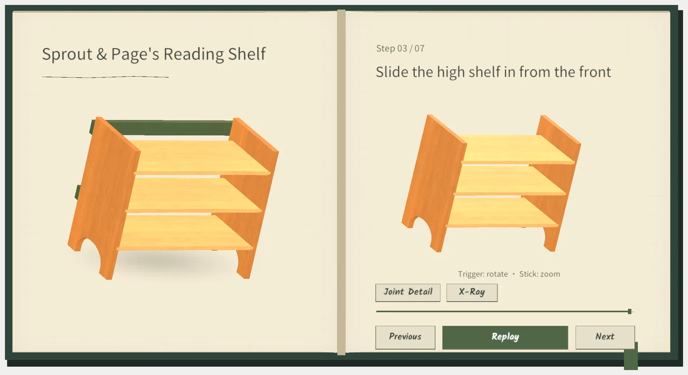


Putting a shelf into a groove, turning a top over and bringing a rail into a side panel need different pictures. Each spread pairs that movement with the shape the player is building towards.

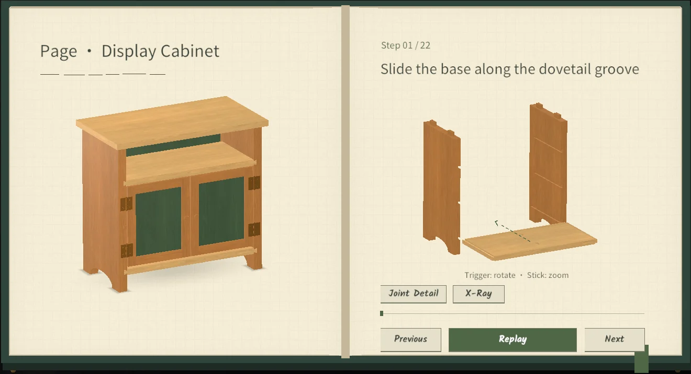

Once assembly is complete, the process sheet shows five operations per page. Here, flush sawing has a checkmark, sanding is active, and dusting comes next. The three states help the player resume after a conversation.

Furniture design
I designed ten pieces of wooden furniture using traditional Chinese mortise-and-tenon joinery. Restoring each one brings back something the residents used to do together.

Choose a track and a resident brings you its disc. Place it on the platter to listen together. Return that same disc before changing the music.
Inspect the wooden record player in 3D
Archivist needs to reach a book. Sprout needs room for leaves. Listen to both residents, choose an arrangement and see how they share the shelf.
Inspect the reading shelf in 3D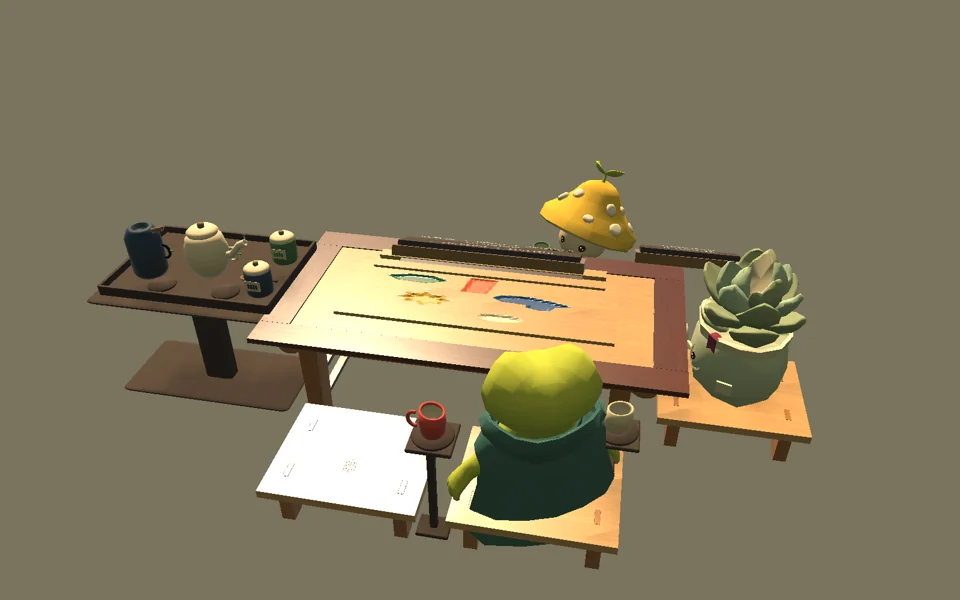
Add tea and water, steep for eight seconds, then fill the cups. As everyone drinks, the different cups and habits become a way to get to know their owners.
Inspect the reading table in 3DRotate an assembled piece and compare it with the same belonging in use. The bench also opens into an exploded view.
3D model
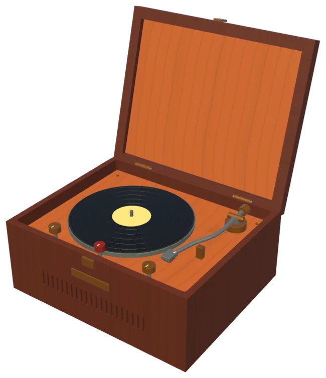
In the room · Unity Editor

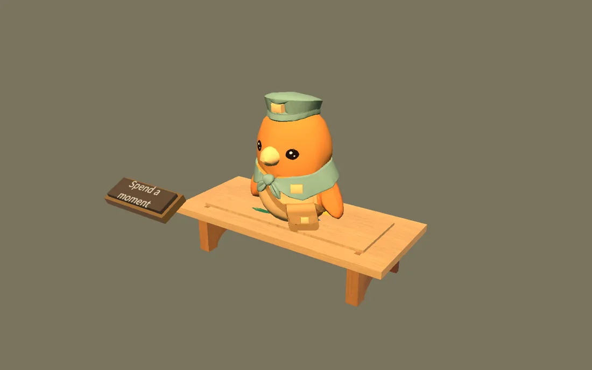

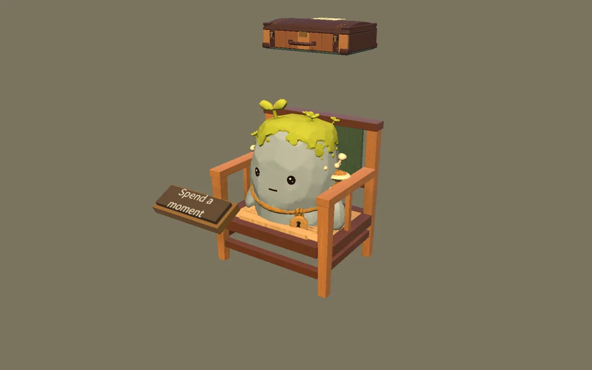


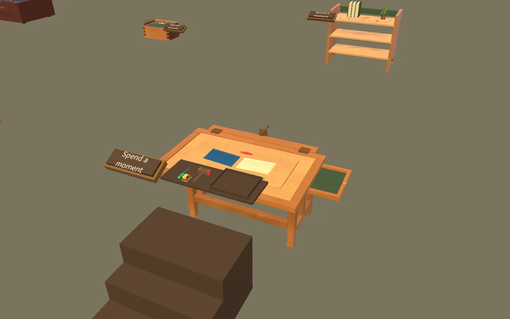

MR & space
Your tabletop sets the direction of the workshop. The real room around it decides where a chair can go, where a resident can walk and when they need you to give them a lift.
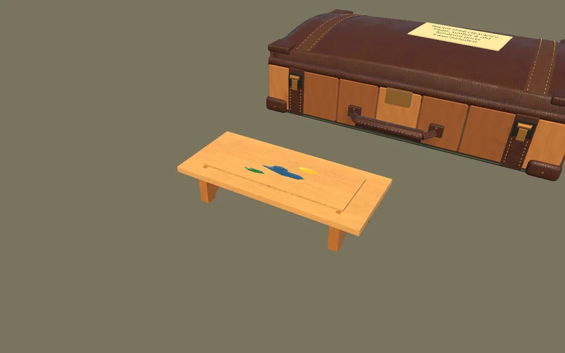

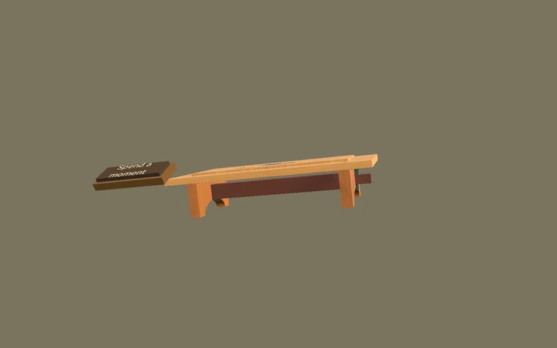

The workshop, the furniture and the player’s hands each have a different role in the spatial system.
Character design
Five people can reassure you in five different ways. Sprout leaves a little space between gestures. Courier rushes into a phrase, opens his arms, then waits. Each resident carries that same rhythm into the workshop and the room.
Listen to the five residents. Sprout · Keeper · Archivist · Courier · Page
Gentle gestures and patient pauses. Sprout tends leaves and turns the cup handle away from them to make a little room.
Keeper checks the alignment of the wood before a reassuring nod. At tea, a small sip brings the drink back down to a familiar fill mark.
One hand supports the book while the other turns the page. Archivist marks the place before sipping and finds it again after a cup mix-up.
Open gestures give way to a sudden pause. Courier retrieves offcuts, shares music and shows the player how to grip his own cup.
Small gestures stay close to the body. Page keeps familiar wood and belongings, and will lend the old cup sleeve when the player asks.
I used Qwen3 VoiceDesign to render “We can try again. Take your time.” in five voices. I kept the stresses and pauses as wordless syllables. Unity selects a take by resident and intention, then reads its loudness every 10 milliseconds to open the mouth as the sound plays.


Archivist marks the page and lifts Courier’s orange cup. The eyes widen as the voice catches. The hand finds the handle of that same cup to return it. Once it is back, Archivist can resume reading and later recall the mistake.
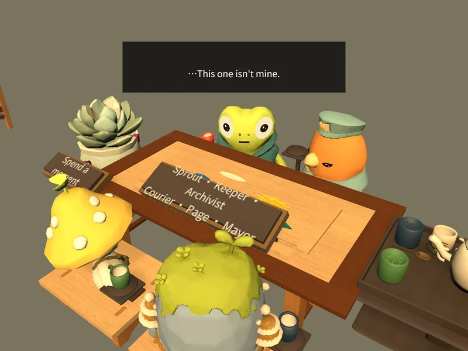
Emotional interaction
Set a tool down and the work will wait. A resident can ask for help, or for a little time to sort something out. The player can answer, take part and pick up the same repair afterwards.
Page has kept the sleeve since the move. To see the packing mark underneath, set the empty cup upright and wait for her reply.
Once she agrees, slide the sleeve off through its seam and rest it on the pad. Returning the same sleeve ends this permission. The next visit begins with a fresh request, while the story about the mark can still be remembered.

Deep in the book, Archivist reaches for someone else’s tea. How much help does he need?
Help return the orange and cream cups to their owners’ rests. Archivist resumes reading and remembers being helped.
Archivist puts the same orange cup back where he picked it up, finds his page and remembers settling the mix-up himself.

Tea rises above Keeper’s familiar fill mark. First, set the cup down safely. Then decide what to do with the extra.
Keeper lifts the cup and drinks a little tea. The level drops, and Keeper can mention this preference another day.
Pour the excess into a small serving cup. The physical transfer completes the exchange and Keeper remembers the response.

Iteration
The question changed twice. First, what could the player and the residents do together between encounters? Then, why would a resident care about the object the player had just earned?
Residents occupied corners of the room, followed routines and met by chance. Between those encounters, playtests left long stretches with little to do together. I brought everyone into one activity inside the suitcase.
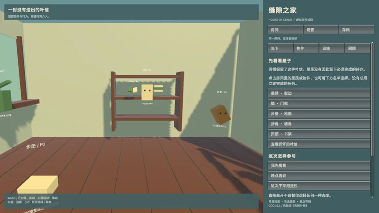
Transport cards and mechanical levels gave the household a common task. The furniture earned at the end still had little connection to the residents’ lives. I kept the shared work and changed what it was for.
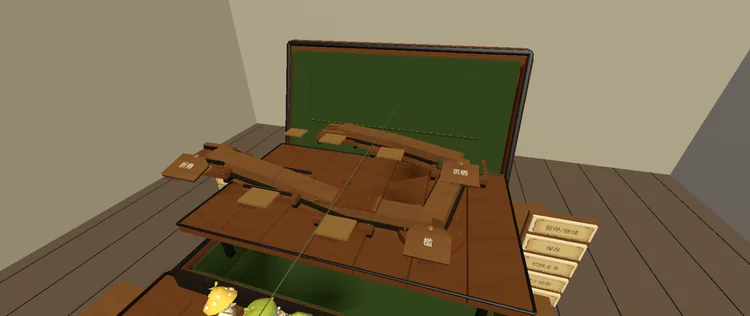
The furniture now arrives with its owners. The player assembles, repairs, decorates and places the same piece the residents later use. Requests, shared routines and remembered choices continue around it.

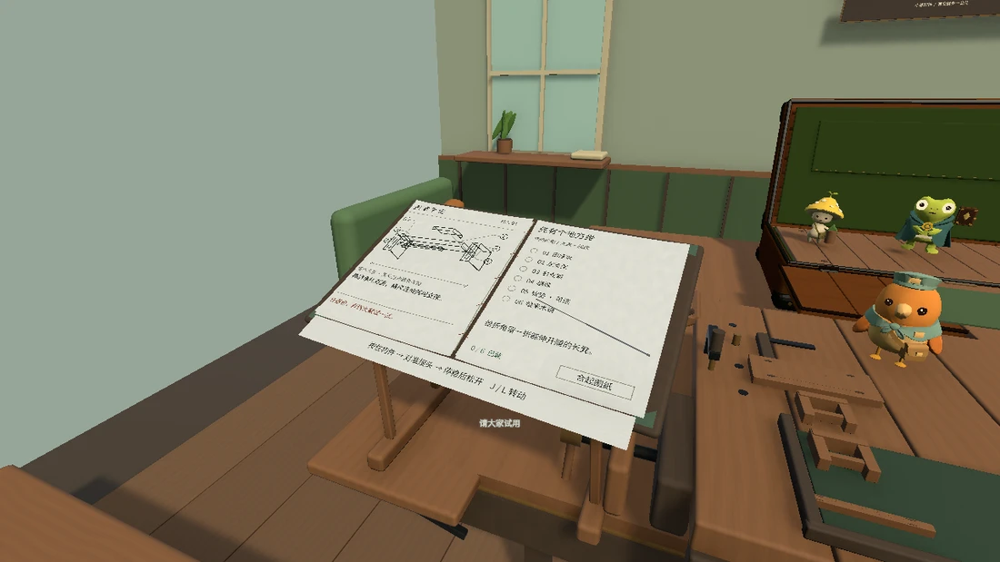


Accessibility
A playtester with less strength in their left hand found sustained holding tiring. I moved the instructions closer and gave the tools supports, so a player can choose, position and operate a tool with one hand.
Both layouts keep the 38 cm reference reach and a level right tray. The left side changes to meet a seated player.
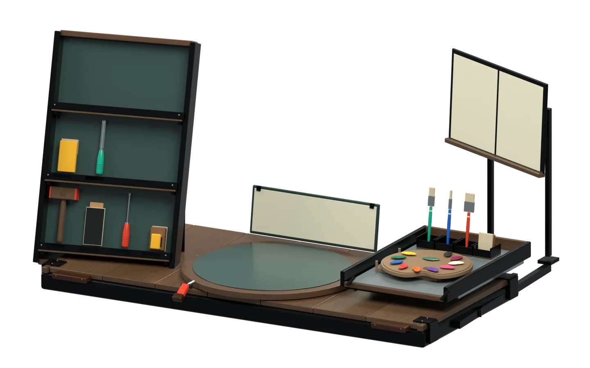

Results
The playable prototype brings ten joinery furniture pieces and five residents into a shared room. It keeps the finish and position of the furniture and remembers completed exchanges, from a borrowed belonging to a choice made during a song.
Meta Quest 3 · Unity · OpenXR
Three implementation studies address different costs in a room full of small objects.


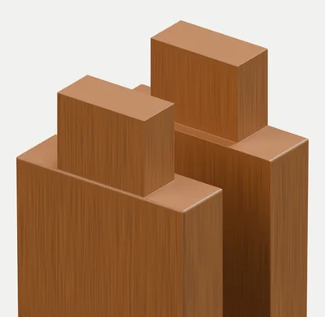
The leg above shows how an opening interrupts a solid face. A separate 23,056-triangle wall-contact test checked two candidates in the forward query and three in reverse.
For 16,384 edge keys, the default hash produced 15 distinct values. The mixed hash produced 16,384. Across eight repeat rounds, cached face bounds were reused with zero new bounds.


One paint mesh per piece holds up to 3,200 brush samples. Laying new paint appends and uploads marks. An unchanged piece reuses its mesh, and a moved part reprojects its marks so openings stay clear.

The wood keeps a 2K colour map with 1K normal and finish maps. At the base mip level, the three maps require an estimated 2.68 MiB in ASTC 6 × 6, compared with 24 MiB in RGBA32.
The estimated base-level allocation falls by 88.8%. Each 1K map has a quarter of the texels of a 2K map. Mipmaps are enabled in the Android build and are additional to the base-level figures.
Game and interaction design, character direction, furniture and prop development, technical art and Unity integration were led by the project creator, with AI-assisted implementation. Character source packages are retained separately from project-specific mesh, performance and contact work.
The research chapter credits the Tsinghua University Art Museum for the table photograph and Wenzhou Museum for its joint illustration. The game-design chapter credits Tima Miroshnichenko and Grovemade for the two setting photographs. Gameplay reference stills are credited to Nintendo and VR Factory Games. Project images show production models, construction studies and Unity Editor captures. The character voice recordings were synthesized offline from original descriptions with Qwen3-TTS VoiceDesign, then edited for timing and smoothness.